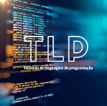

Linguagem de Programação: São conjuntos de regras com léxicas e sintáticas para se
escrever um programa.
A linguagem de programação permiti o programador criar programas apartir de um conjunto de ordens, acções conssecutivas, dados e algoritmos.

TLP
Hoje existem diversos tipos de linguagens de programação, as quais são escritas pelos programadores,
algumas dessas linguagens são conpreendidas pelos tradutores, pois os computadores não executam
directamente os algoritmos.
As linguagens de programação podem ser classificadas com três tipos:
Linguagem de máquina: são votadas para o entendimento da máquina ou seja, linguagem
compreendida pelo computador, as instruções são representados por valores binários(0 e 1).
Linguagem de Baixo Nível: são linguagens que utilizam instruções próximas á linguagem de
máquina, porém compreendida pelo ser humano.
Ex: ASSEMBLY
Linguagem de Alto Nível: linguagens cuja instruções estão bem próxima da compreensão
humana. Isso significa que esse tipo de linguagem é muito mais intuitivo, amigavél e mais
fácil de compreender.
Ex: Python, Java, C, C++, C#, PHP etc...
Programa Fonte: é um conjunto de palavras ou simbolos escrito pelo programador na linguagem
de programação existente de maneira lógica.
Ex:
#include <stdio.h>
int main(){
int x,y,s;
printf("Digite um número: ");
scanf("%d",&Sx,Sy);
printf("A soma dos números é: %d",s); }
Programa Objecto: é um programa executavél por máquina criado após a compilação de um programa fonte.
Ele contém linguagens de niveis inferiores, como Assembly ou código de máquina.
Portanto, o programa objecto não pode ser lido por humanos, é compreensível pela máquina.
Programa Tradutor: ler uma linguagem de programação alto nível e transformar para linguagem de máquina.
Código fonte→Análise léxica + Análise sintática→Código Binário→Computador ou Telefone.

Para mais conhecimentos acesse as TLP